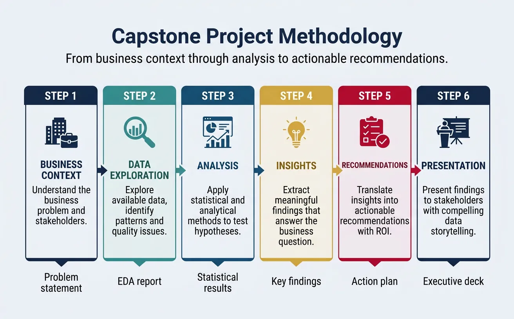
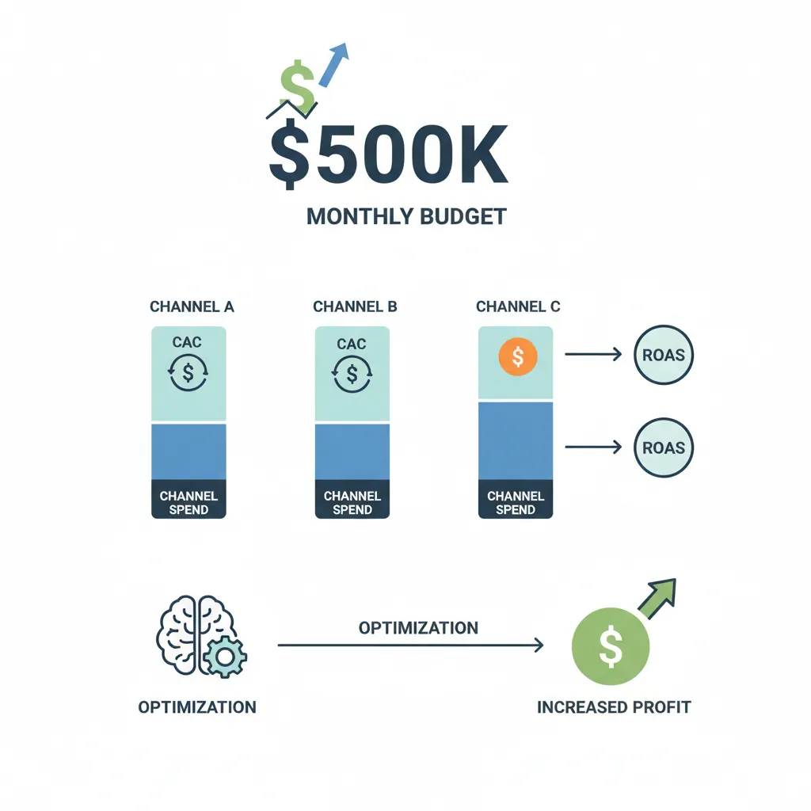
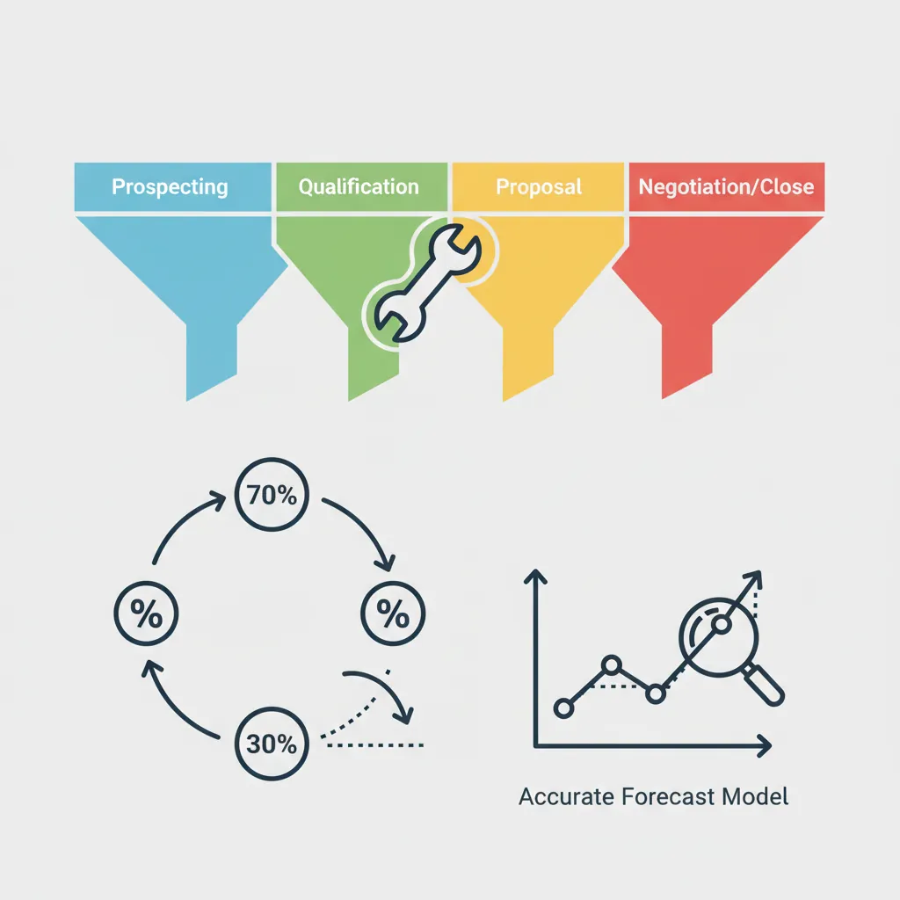
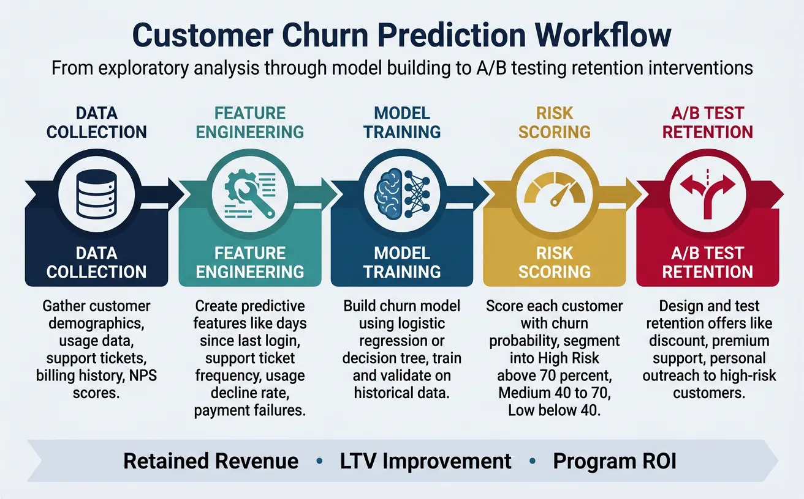
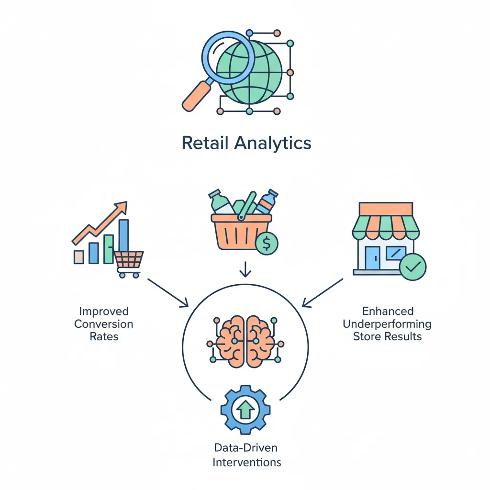

1. Introduction
Theory becomes skill through practice. These capstone projects and case studies let you apply everything from the DDDM series to realistic scenarios—building a portfolio you can show employers.

Data-Driven Decisions
Introduction to Business Analytics & DDDM
Analytics maturity, data-driven culture, business valueDefining & Tracking KPIs
OKRs, leading/lagging indicators, scorecard designDashboard Design & BI Tools
Tableau, Power BI, dashboard best practices, data vizExperimentation & A/B Testing
Hypothesis testing, control groups, sample sizingStatistical Significance & Interpretation
P-values, confidence intervals, effect size, power analysisDecision Frameworks & Structured Decision Making
Decision matrices, Bayesian thinking, risk analysisData Collection & Quality Management
Surveys, ETL, data governance, cleaning pipelinesBusiness Storytelling & Visualization
Narrative structure, chart selection, audience designPredictive Analytics & Forecasting
Regression, time series, ML models, forecasting methodsData-Driven Culture & Organizational Adoption
Change management, data literacy, organizational buy-inFunction-Specific Data Applications
Marketing, finance, operations, HR analyticsCapstone Projects (Portfolio-Ready)
End-to-end analytics projects, portfolio buildingAdvanced Analytics & Automation
ML pipelines, AutoML, real-time analytics, AI integrationProject Approach
Each project follows a consistent structure:
- Business Context: Understand the problem and stakeholders
- Data Exploration: What data is available? What's the quality?
- Analysis: Apply appropriate techniques (KPIs, experiments, forecasting)
- Insights: What did you learn?
- Recommendations: What actions should be taken?
- Presentation: Communicate findings effectively
Expected Deliverables
- Executive summary: 1-page with key findings and recommendations
- Dashboard: Interactive visualization of key metrics
- Technical documentation: Methodology, data sources, assumptions
- Presentation deck: 10-15 slides for stakeholders
2. Capstone Project 1: Marketing ROI Analysis
Skills applied: KPIs, attribution, dashboards, storytelling

Project Brief
Scenario
You're an analyst at a B2B software company. The CMO wants to understand which marketing channels deliver the best ROI and how to reallocate the $500K monthly budget.
Data available: Channel spend, leads generated, lead-to-opportunity rate, deal values, attribution data (first-touch and last-touch).
Solution Walkthrough
- Define KPIs: CAC by channel, ROAS, pipeline generated, MQL-to-SQL rate
- Build attribution model: Compare first-touch, last-touch, and linear
- Calculate ROI: (Revenue attributed - Spend) / Spend
- Segment analysis: ROI by deal size, industry, buyer persona
- Recommendations: Reallocate budget from high-CAC to low-CAC channels
3. Capstone Project 2: Sales Pipeline Optimization
Skills applied: Pipeline metrics, forecasting, decision frameworks

Project Brief
Scenario
A sales VP is concerned about missed quarterly targets. They want to understand pipeline health and improve forecasting accuracy.
Data available: CRM data (deals, stages, dates, amounts, win/loss), rep activity, historical performance.
Solution Walkthrough
- Pipeline metrics: Coverage ratio, stage conversion rates, average deal cycle
- Identify bottlenecks: Where do deals stall? Which reps struggle?
- Build forecast model: Weighted pipeline + historical accuracy adjustment
- Root cause analysis: Why deals are lost (price, competitor, timing)
- Recommendations: Actions for sales management (coaching, process changes)
4. Capstone Project 3: Customer Churn Prediction
Skills applied: Predictive analytics, experimentation, function-specific KPIs

Project Brief
Scenario
A subscription service is losing customers. The CEO wants to identify at-risk customers before they churn and test retention interventions.
Data available: Customer demographics, usage data, support tickets, billing history, NPS scores.
Solution Walkthrough
- Define churn: When does a customer count as "churned"?
- Exploratory analysis: What patterns distinguish churners?
- Build churn model: Logistic regression or decision tree for risk scores
- Design intervention: A/B test retention offers to high-risk customers
- Calculate impact: Retained revenue, LTV improvement, ROI of program
5. Case Study: Retail Analytics
How a regional retailer used DDDM to improve store performance.

Background
Company: 50-store regional home goods retailer
Challenge: Same-store sales declining 3% YoY despite foot traffic growth
Goal: Identify root causes and recommend actions
Analysis & Results
| Finding | Action | Result |
|---|---|---|
| Conversion rate down 8% | Added floor staff during peak hours | Conversion +5% |
| Basket size down 12% | Cross-sell training + merchandising changes | Basket size +7% |
| 10 stores underperforming | Manager coaching + localized assortment | 8 of 10 improved |
6. Case Study: SaaS Metrics
How a B2B SaaS startup improved unit economics through DDDM.
Background
Company: $5M ARR project management SaaS
Challenge: CAC payback period > 24 months (unsustainable)
Goal: Reduce CAC payback to <12 months
Analysis & Results
- Discovery: 70% of CAC from paid search; lowest-converting channel
- Action 1: Shifted 50% of paid search budget to content marketing
- Action 2: Implemented product-led growth (free trial → upsell)
- Action 3: Added customer health scoring for proactive retention
- Result: CAC payback reduced to 11 months; NRR improved from 95% to 110%
7. Case Study: Healthcare Operations
How a hospital system used DDDM to reduce patient wait times.
Background
Organization: 5-hospital regional health system
Challenge: ER wait times averaged 4.5 hours (patient satisfaction declining)
Goal: Reduce average wait time to <2 hours
Analysis & Results
| Root Cause | Intervention | Impact |
|---|---|---|
| Peak hours understaffed | Predictive staffing model | Wait time -45 min |
| Triage bottleneck | Added fast-track for low-acuity patients | Wait time -30 min |
| Lab delays | Point-of-care testing in ER | Wait time -15 min |
Final result: Average wait time reduced to 2.5 hours (44% improvement). Patient satisfaction scores increased 22 points.
8. Conclusion & Next Steps
You've now covered the key concepts in this section of data-driven decision making. Here's a summary of what you've learned:
Portfolio Tips
- Document your process: Show how you think, not just final answers
- Quantify impact: Use numbers—"increased X by Y%"
- Show tools: Include SQL queries, Python code, dashboard screenshots
- Tell the story: Context → Analysis → Insight → Action → Result
- Host publicly: GitHub, Tableau Public, personal website
In the final article, we'll cover Advanced Analytics & Automation—the frontier of AI-powered decision making.